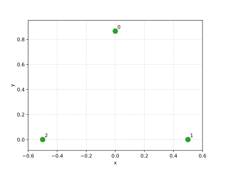
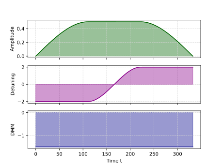

The quantum pipeline
A QUBO problem on \(N\) variables consists in a symmetric matrix \(Q\) of size \(N\times N\).
Solving a QUBO problem means to find the bitstring \(z=(z_1,...,z_N)\in \{0, 1\}^N\) that minimizes the quantity
Problem formulation in Rydberg Hamiltonian
To use a Rydberg Analog model, we need to map the QUBO problem onto the Rydberg Hamiltonian.
This is achieved by identifying the binary variables with atomic occupations
where denotes whether atom \(i\) is in the Rydberg state.
The effective Hamiltonian in the classical (diagonal \(\tilde{\Omega}=0\)) limit of the driven Rydberg system can be written as
where is the local detuning and is the interaction energy between atoms \(i\) and \(j\). By direct comparison, we obtain the mapping:
Mapping \((1)\) is the final detuning part of the drive shaping. Mapping \((2)\) is called the embedding.
In this way, tuning the interaction strengths between atoms (e.g., via their spatial separation) we can match the QUBO coefficients, while adjusting \(Q_{ii}\) maps to change the local detunings. Under this correspondence, the ground state of the Rydberg Hamiltonian minimizes \(H\) and therefore encodes the optimal solution of the original QUBO problem.
Factor 2
The interaction between two atoms is physically counted only once, but our symmetric matrix representation of \(Q\) counts each off-diagonal pair twice (\(Q_{ij}\) and \(Q_{ji}\)), which is what introduces the factor \(2\) on the diagonal. Equivalently, the Hamiltonian corresponds to a triangular matrix representation.
See QoolQit's documentation for more details on the Rydberg Hamiltonian.
Both drive and register are then compiled into a QuantumProgram, to run on a quantum backend (emulator or QPU).
Qubo Solver can solve a QUBO instance using Pasqal's Rydberg analog devices, either on local/remote emulators or on a real QPU. Solving with a quantum approach is a pipeline of three steps, each exposed as a standalone function you can call directly:
- Embedding — map the QUBO instance's variables to atoms on a device, producing a
Register. - Drive shaping — build the time-dependent drive Hamiltonian applied to the register.
- Compiling and running — compile the register and drive into a program, and run it on a backend: a local emulator, a remote emulator, or a real QPU.
Example
from qubosolver import (
Instance,
Solution,
LocalEmulator,
embedding,
drive_shaping,
solving,
matrix,
analysis,
)
import qoolqit
# Private utility to set seed.
from qubosolver.utils._random import manual_seed
manual_seed(147)
instance = Instance(
matrix.tensor(
[
[-2.0, 1.0, 1.0],
[1.0, -4.0, 1.0],
[1.0, 1.0, -1.0],
]
)
)
device = qoolqit.AnalogDeviceWithDMM()
backend = LocalEmulator()
# 1. Embedding: map the instance onto a register of atoms.
register = embedding.blade.embed(instance)
# 2. Drive shaping: build the drive Hamiltonian for that register.
drive = drive_shaping.proportional_diagonal.build_drive(instance, register, device=device, dmm=True)
# 3. Compile and run on the chosen backend.
program = solving.analog_quantum_sampling.compile(register, drive, device)
job = backend.run(program)
# 4. Turn the raw results into a Solution and inspect it.
solution = Solution.from_results(job.results(), instance)
print(analysis.to_dataframe([solution]))
You can plot the register and the drive.
 
from pathlib import Path
from matplotlib import pyplot as plt
output_dir = Path.cwd()
output_dir.mkdir(parents=True, exist_ok=True)
register.draw()
fig = plt.gcf()
fig.savefig(output_dir / "quantum_intro_register.svg")
plt.close(fig)
drive.draw()
fig = plt.gcf()
fig.savefig(output_dir / "quantum_intro_drive.svg")
plt.close(fig)
Each call returns a plain object you can inspect or pass to a different step: swap embedding.blade.embed for embedding.greedy.embed, try another drive shaping method, or run on a different backend — the rest of the pipeline is unaffected.
To run remotely (on a remote emulator or a real QPU), pass a RemoteEmulator or QPU backend instead of LocalEmulator. Remote runs are asynchronous: backend.run(program) returns as soon as the job is queued, so you can save its identifiers and retrieve the results later. See the qubosolver-in-full tutorial for the full remote and save/retrieve example, as well as the equivalent classical functional call.
The Solver shortcut
For the common case, SolverConfig and Solver wrap the four steps above into a single call, using sensible defaults for anything you don't specify:
from qubosolver import (
Instance,
Solver,
SolverConfig,
matrix,
analysis,
)
# Private utility to set seed.
from qubosolver.utils._random import manual_seed
manual_seed(147)
instance = Instance(
matrix.tensor(
[
[-2.0, 1.0, 1.0],
[1.0, -4.0, 1.0],
[1.0, 1.0, -1.0],
]
)
)
config = SolverConfig()
solver = Solver(instance, config)
solution = solver.solve()
print(analysis.to_dataframe([solution]))
Where to go next
- Learn how variables are mapped onto atoms in Embedding.
- Learn how the drive Hamiltonian is built in Drive shaping.
- Choose between local emulators, remote emulators and a QPU in Backends.